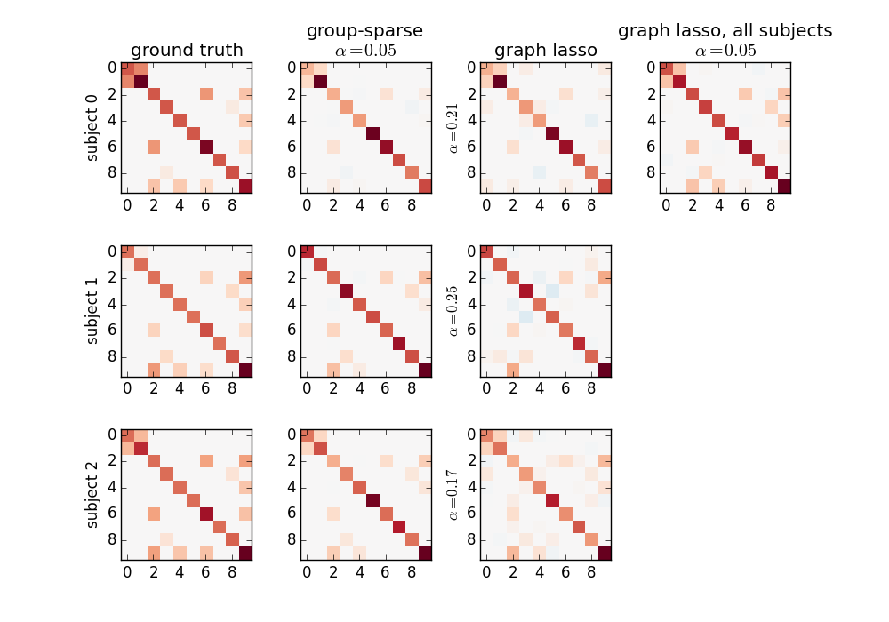

Page summary
A functional connectome is a set of connections representing brain interactions between regions. Here we show the use of sparse-inverse covariance estimators to extract functional connectomes.
References
Resting-state functional connectivity can be obtained by estimating a covariance matrix C for signals from different brain regions. Each element of C gives the covariance between two brain regions. The same information can be represented as a weighted graph, vertices being brain regions, weights on edges being covariances (gaussian graphical model). In turn, this graph can be interpreted as a connection graph between brain regions, with weights giving the strength of the connection. However, coefficients in a covariance matrix reflects direct as well as indirect connections. Covariance matrices tend to be dense, and it is rather difficult to extract from them only the direct connections between two regions.
This can be achieved using the inverse of the covariance matrix, ie the precision matrix. It contains partial covariances, which are covariances between two regions conditioned on all the others. It thus gives only direct connections between regions.
Sparsity in the inverse covariance matrix is important to reduce noise in the estimated connectome by limiting the number of edges (technicaly, this problem arises from multi-colinearity in time series, when the number of time points is not very large compared to the number of regions). Here we explore 2 different options to estimate sparse inverse covariance estimates:
We simulate several sets of signals, one set representing one subject, with different precision matrices, but sharing a common sparsity pattern: 10 brain regions, for 20 subjects:
from nilearn._utils.testing import generate_group_sparse_gaussian_graphs
n_subjects = 20 # number of subjects
n_displayed = 3 # number of subjects displayed
subjects, precisions, topology = generate_group_sparse_gaussian_graphs(
n_subjects=n_subjects, n_features=10, min_n_samples=30, max_n_samples=50,
density=0.1)
subjects and precisions are lists containing respectively each subject’s signals and the corresponding true precision matrices used in the generation (ground truth). topology is a single array with only 0 and 1 giving the common sparsity pattern.
The actual estimation is performed using a cross-validation scheme. This allows for selecting the regularization parameter value for which the model generalizes best on unseen data. This is important to get models that might be expected to be valid at the population level.
A single-subject estimation can be performed using the Graph Lasso estimator from the scikit-learn:
from sklearn.covariance import GraphLassoCV
gl = GraphLassoCV(verbose=True)
for n, subject in enumerate(subjects[:n_displayed]):
gl.fit(subject)
After calling fit, the estimated precision matrix can be plotted using:
plot_matrix(gl.precision_)
where plot_matrix is a convenience function to avoid repeating the same code. It draws the matrix as an image, taking care of using a symmetric range, so that zero values are just in the middle of the colormap (white in that case):
def plot_matrix(m, ylabel=""):
abs_max = abs(m).max()
pl.imshow(m, cmap=pl.cm.RdBu_r, interpolation="nearest",
vmin=-abs_max, vmax=abs_max)
It is also possible to fit a graph lasso on data from every subject at once:
import numpy as np
gl.fit(np.concatenate(subjects))
Running a group-sparse estimation is very similar, the estimator comes from NiLearn this time:
from nilearn.group_sparse_covariance import GroupSparseCovarianceCV
gsc = GroupSparseCovarianceCV(max_iter=50, verbose=1)
gsc.fit(subjects)
The results are shown on the following figure:
The group-sparse estimation outputs matrices with the same sparsity pattern, but different values for the non-zero coefficients. This is not the case for the graph lasso output, which all have similar but different structures. Note that the graph lasso applied to all subjects at once gives a sparsity pattern close to that obtained with the group-sparse one, but cannot provide per-subject information.
Note
The complete source code for this example can be found here: plot_connect_comparison.py
For a detailed example on real data: plot_adhd_covariance.py
A lot of technical details on the algorithm used for group-sparse estimation and its implementation can be found in Group-sparse covariance estimation.